Ashen Age
Sobre
O ahen age conta as historias do Capitao Flameheart. Elas sao divididas em 2 lorotas idependentes a "A Alma Maritima" e "Coracao de Fogo". Se vai entrar em uma dessas grandes aventuras tome cuidado pois as coisas vao esquentar...
A Alma Maritima
A Alma Maritima e uma lorota idependente que foi lancada em 2019. Quem nos conta essa historia e o fantasma do Sr Arthur Pendragon, que foi selado dentro de seu retrato na sua mesa de capitao em seu barco naufragado, mas que agora foi libertado por um estranho
| Condecoracoes | |||
|---|---|---|---|
| Imagem | Condecoracao | Necessario | Recompensas |
| Um tumulo Aquatico | Liberte a Capta Martha Jane. | n/a | |
| 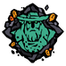 | Uma Emboscada Frustrada | Liberte o Capitao Randal Stone. | n/a |
| 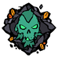 | Sepultado | Liberte a alma do Capitao perdido. | n/a |
| 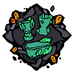 | Artefatos de Ashen | Descubra os 3 artefatos do ashen. | n/a |
| 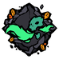 | A Alma Maritima | Conclua a Lorota. | Desbloqueia a Espada de Alma |
| Os Diarios de Ashen | Descubra os Jornais do Ashen Dragon. (5) | n/a | |
| 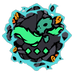 | Uma acensao em poder | Condecoracao Lendaria: Conclua a historia. (3) | n/a |
| 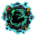 | Fogo e Cinzas | Condecoracao Lendaria: Conclua todas as Condecoracoes para "A Alma Maritima". | Desbloqueia a Vela do Ashen Dragon |
Coracao de Fogo
Coracao de Fogo e uma lorota idependente que foi lancada em 2020. Quem nos conta essa historia e a Tallualah que direciona os jogadores a Grace Morrow e o Sr Arthur Pendragon.
| Condecoracoes | |||
|---|---|---|---|
| Imagem | Condecoracao | Necessario | Recompensas |
 |
O Esconderijo do Mentiroso | Descubra o sconderijo de Stitcher Jim. | n/a |
| 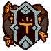 | O caminho do Rei Eterno | Conquiste o caminho do Rei Eterno. | n/a |
| O caminho da Chama Esquecida | Conquiste o caminho da Chama Esquecida. | n/a | |
| 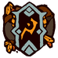 | O caminho do Coracao Ardente | Conquiste o caminho do Coracao Ardente | n/a |
| 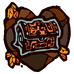 | O Fogo Aumenta | Descubra o Bau da Furia. | n/a |
 |
Planos de Stitcher | Descubra os Diarios de Stitcher Jim. (5) | n/a |
| 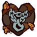 | Coracao de Fogo | Conclua a Lorota. | Desbloqueia o Casco do Ashen Dragon |
| 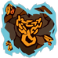 | Salvador de Almas | Condecoracao Lendaria: Conclua a Historia. (3) | n/a |
| 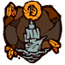 | O Blackwyche Renacido | Condecoracao Lendaria: Conclua todas as Condecoracoes para "Coracao de Fogo". | Desbloqueia a Maldicao de Ashen |